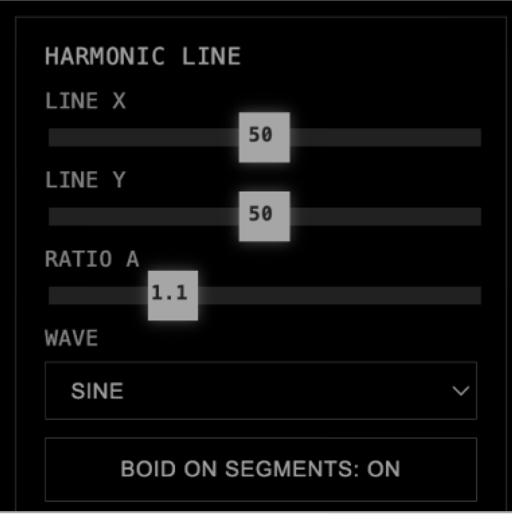
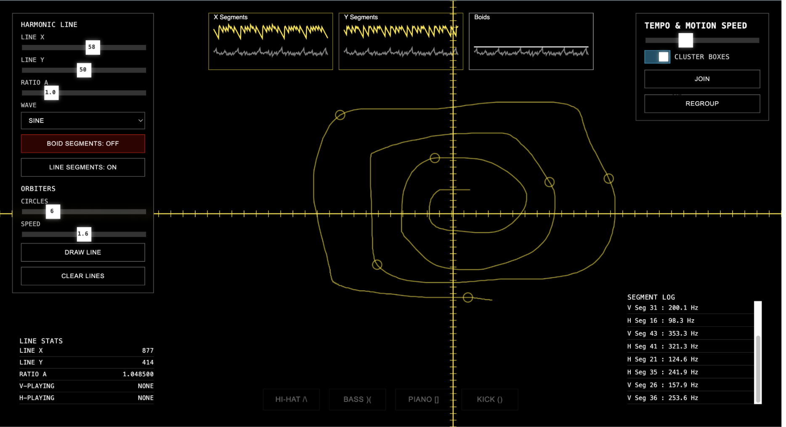
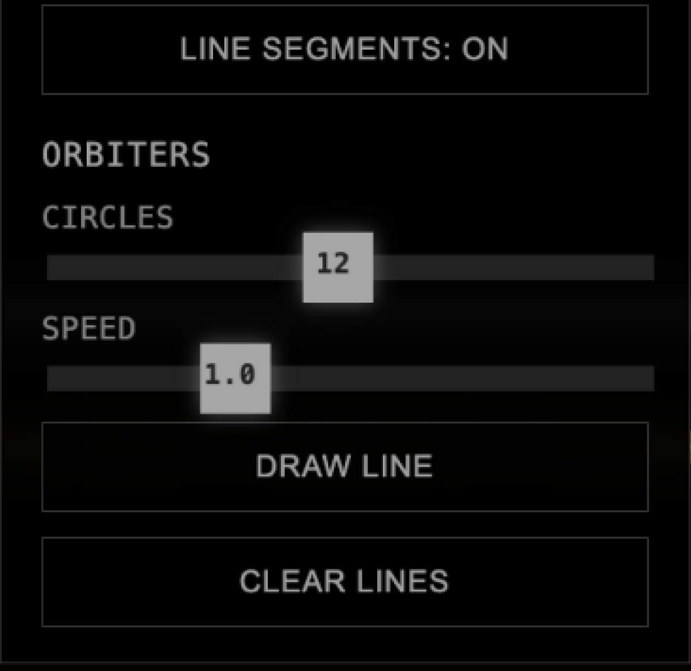
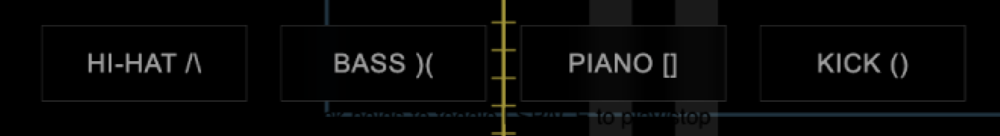
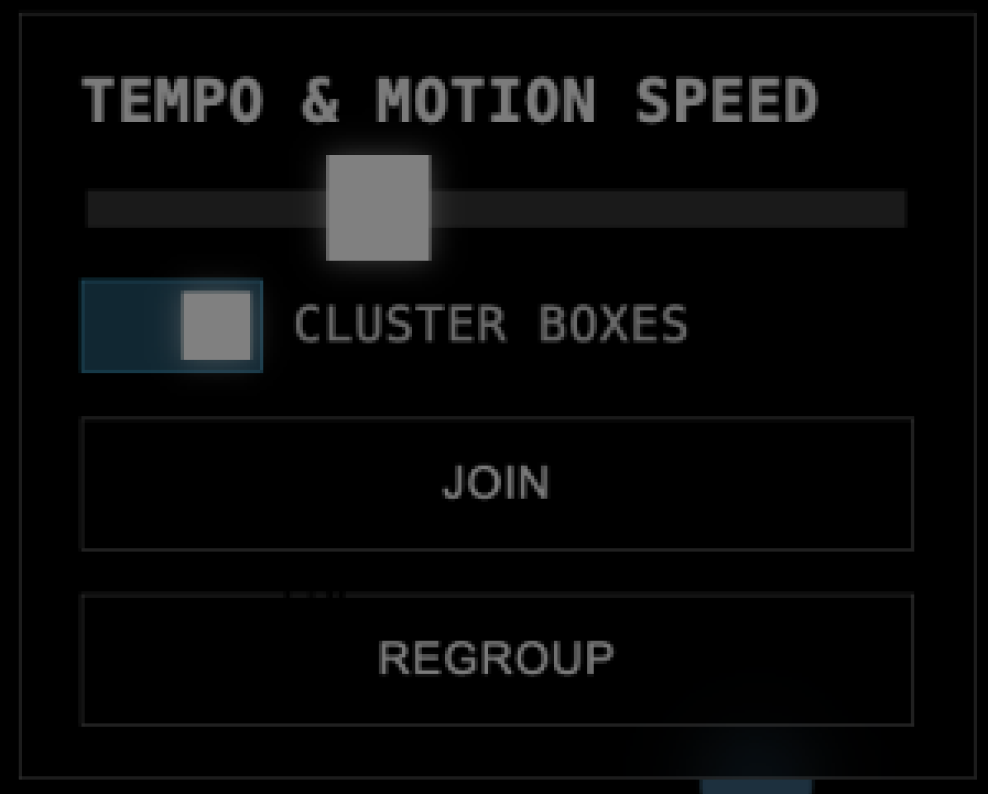
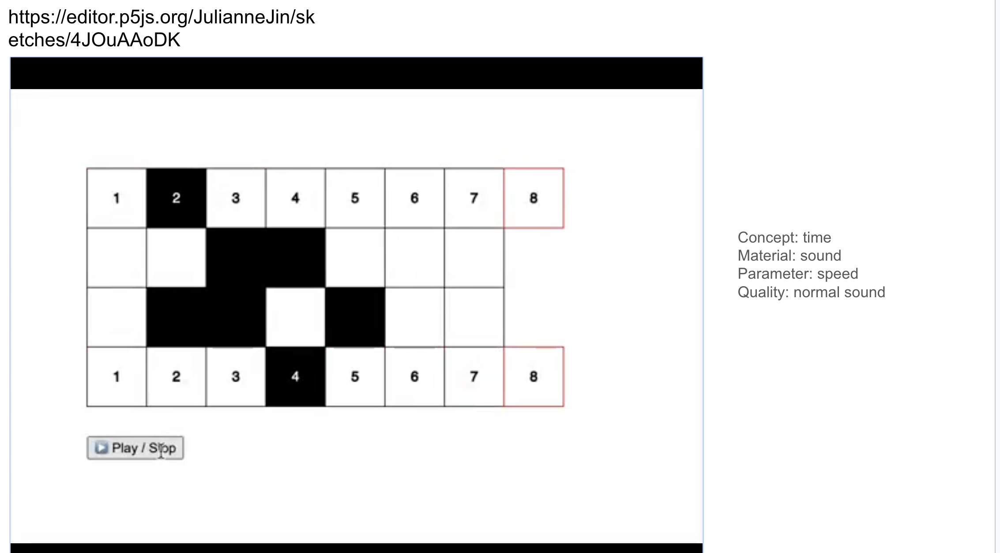
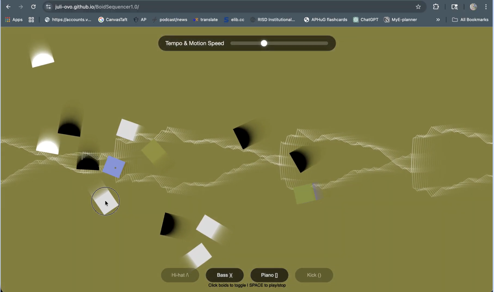
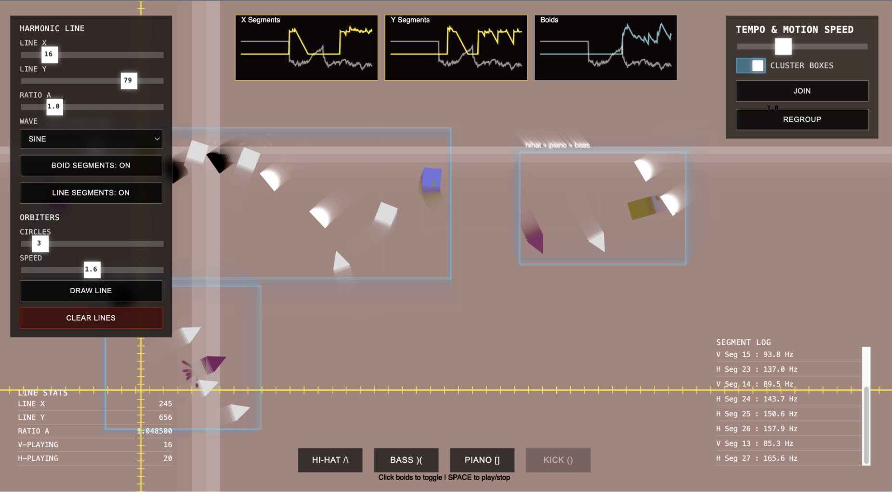

Harmonic Line
01
Sets the X/Y position and ratio of the line that triggers sounds. Tilting it makes the flock cross in waves rather than clusters.
A step sequencer with no fixed grid. Four shapes drift in flocking formation and play a sound each time they cross an axis, so you steer the system instead of programming it.

A sequencer works because its buttons stay put. I made them move.
I started with an ordinary step sequencer, where you learn a button's position and press it to get the same sound back. Then I let the buttons drift in a flocking simulation, which removes the spatial memory the instrument depends on.
Two axes cross the field, and a shape passing through one triggers its sound. You end up adjusting the flock's behavior and listening to the result rather than writing a pattern. It's closer to a toy than an instrument. What I was curious about was how much control you lose when the grid stops holding still.
Each panel changes the behavior of the space rather than the notes, so there's no way to sequence a specific melody.

Sets the X/Y position and ratio of the line that triggers sounds. Tilting it makes the flock cross in waves rather than clusters.

Number and speed of the orbiting circles. This is the closest thing the piece has to a metronome.

Hi-hat, bass, piano, and kick. Each has its own step sequence and maps to one group in the flock.

Global tempo and flock cohesion. Tight cohesion produces dense chords; loose cohesion thins it out to single notes.



Testers split on the loss of control: some liked not being in charge, others wanted a button they could rely on. Instead of picking a side I added the small sequencer map along the bottom, which shows which step actually fired. The behavior stays unpredictable, but you can see what happened.
This was also the first project where I directed a model to write the code while making the design calls myself. The visuals are the part I'd keep.
Each frame, every agent measures separation, alignment, and cohesion against its neighbors, plus distance to the cursor as a repulsion field.
Each shape's side of the axis is stored. When the side flips, that counts as an event — no polling and no quantize grid.
Events go to Tone.js on the audio clock, not the animation clock, so the rhythm holds when the canvas drops frames.
Graphics read the same event queue one frame later, so the flash on screen matches the sound.